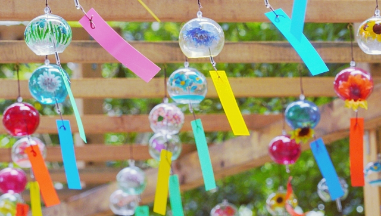

ハッピーランド
M000000 あきら様
ホーム
さがす
メッセージ
掲示板
ポイント
その他
MENU
プロフィール
各種設定
お相手自動紹介
ポイント購入
ポイントゲット
システム・料金案内
よくある質問
お問合せ
【制作会社さまへ】掲示板（日記と掲示板の一覧）※形は仮。資料が届いたら直す
下のメニューの「掲示板」を押すと、この画面。上のタブで「日記」と「掲示板」を切り替える。
日記：みんなの日記を新しい順に。写真・名前（年齢）・日付・本文の出だし・いいねの数。右上の「書く」で、日記を書く画面へ。
掲示板（新しい機能）：話題ごとの書き込み。分類の札（お茶・食事／趣味／おでかけ／雑談）・題名・書いた人・日時・返事の数。押すと、その話題の中身と返事の一覧へ。
連絡先を書くのは禁止（日記・掲示板とも）。
日記・掲示板
書く
日記
掲示板
ゆみこ
（58歳）
11月12日
今日は久しぶりに名古屋港まで散歩に行きました。風が気持ちよくて、帰りに喫茶店でモーニングを食べました。

いいね 12
たかし
（64歳）
11月12日
家庭菜園の大根がようやく太くなってきました。今年はおでんにします。
いいね 7
まさみ
（55歳）
11月11日
紅葉を見に香嵐渓へ。人が多かったけれど、きれいでした。
いいね 15
なおみ
（63歳）
11月10日
孫が遊びに来てくれて、一緒にカレーを作りました。
いいね 9
お茶・食事
週末に名古屋でお茶できる方
けいこ（61歳）・岐阜県 今日 18:20
3
趣味
カラオケ好きな方、お話ししませんか
たかし（64歳）・愛知県 今日 9:05
5
おでかけ
来月、日帰りで温泉に行ける方
ひろこ（57歳）・静岡県 昨日
2
雑談
おすすめの時代劇を教えてください
よしお（68歳）・三重県 11月10日
8
お茶・食事
モーニングのおいしいお店
なおみ（63歳）・愛知県 11月9日
6